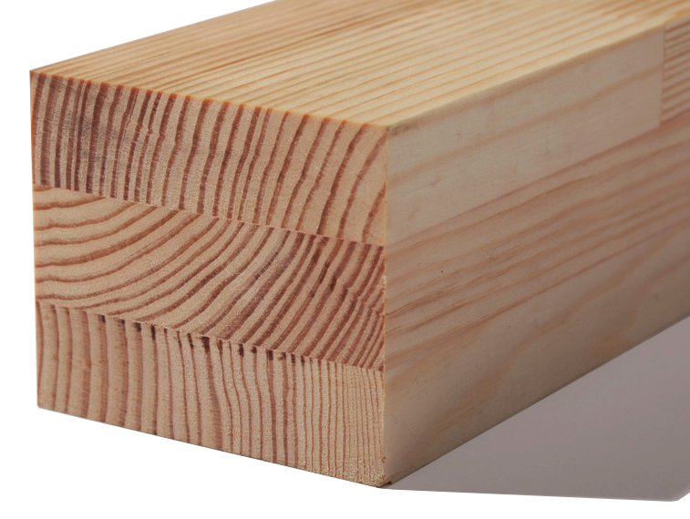

Дерево — чистий, природний матеріал, який володіє прекрасними технологічними властивостями. Опір теплопередачі дерев’яного вікна 0,67-0,77 м²·К/Вт, тоді як у металопластикового біля 0,5 м²·К/Вт.

Завдяки високотехнологічному виробництву, обладнаному за європейськими стандартами, ми виготовляємо широкий асортимент віконних профілів, каркасів та вікон найрізноманітніших конструкцій за сучасними європейськими стандартами. Сучасне обладнання дозволяє випускати високоякісні вироби з гарантією не менше ніж 15 років, що відповідають всім нормам світового стандарту за доступними широкому колу населення цінами, що також є важливим фактором успіху підприємства! На базі нашого підприємства маємо весь цикл виробництва та автоматизований виробничий комплекс, що володіє великими потужностями і суттєво впливає на зниження ціни продукту.

При виготовленні дерев’яних профілів використовується тільки натуральна деревина (дуб, сосна). А завдяки технології виготовлення трьохшарового клеєного бруса забезпечується довговічність, висока міцність (на 80% більша ніж у вікон із масиву), незмінність розмірів і прекрасні експлуатаційні властивості, причому повністю зберігається жива краса, затишок та теплота природного матеріалу.
Саме такі «ощадливі та тихі вікна» вже протягом багатьох років надзвичайно популярні у Німеччині та Скандинавії.
Ми виготовляємо дерев’яні віконні рами, які найкраще зберігають тепло, що запобігає появі конденсату на стулці. Опір теплопередачі дерев’яного вікна 0,67-0,77 м²·К/Вт, тоді як у металопластикового біля 0,5 м²·К/Вт.
Спеціальна обробка деревини антисептиком, покриття ґрунтовкою та еластичним лаком чи фарбою гарантують комфортність, привабливий вигляд, екологічність натурального матеріалу.
Велика пропозиція конструкційних рішень втілить всі ваші ідеї в реальність!